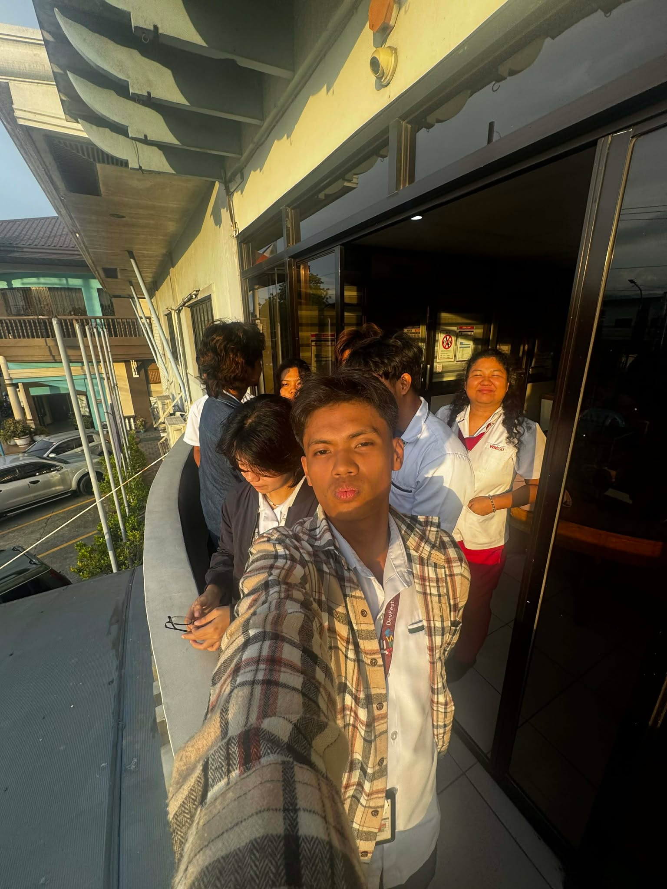
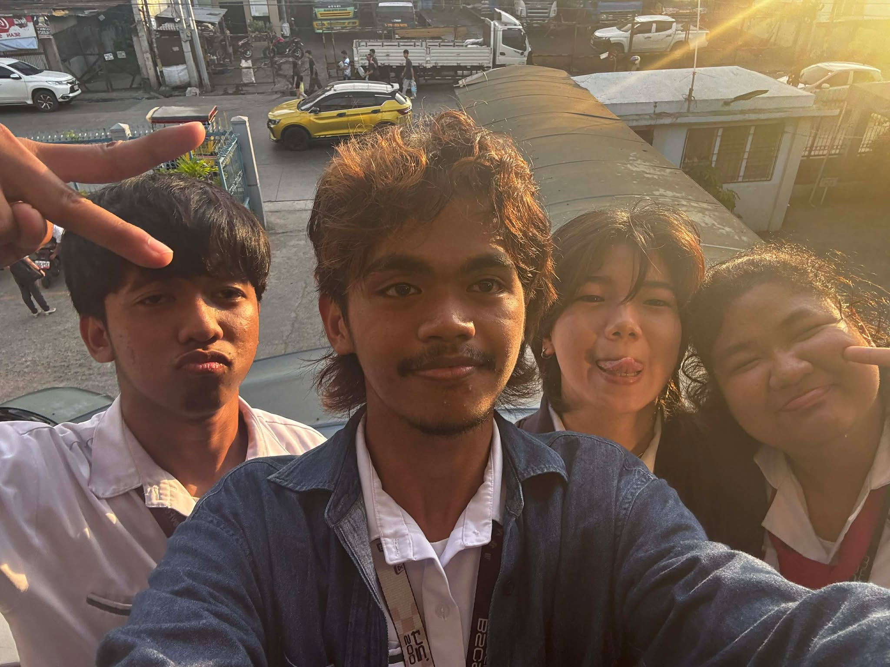
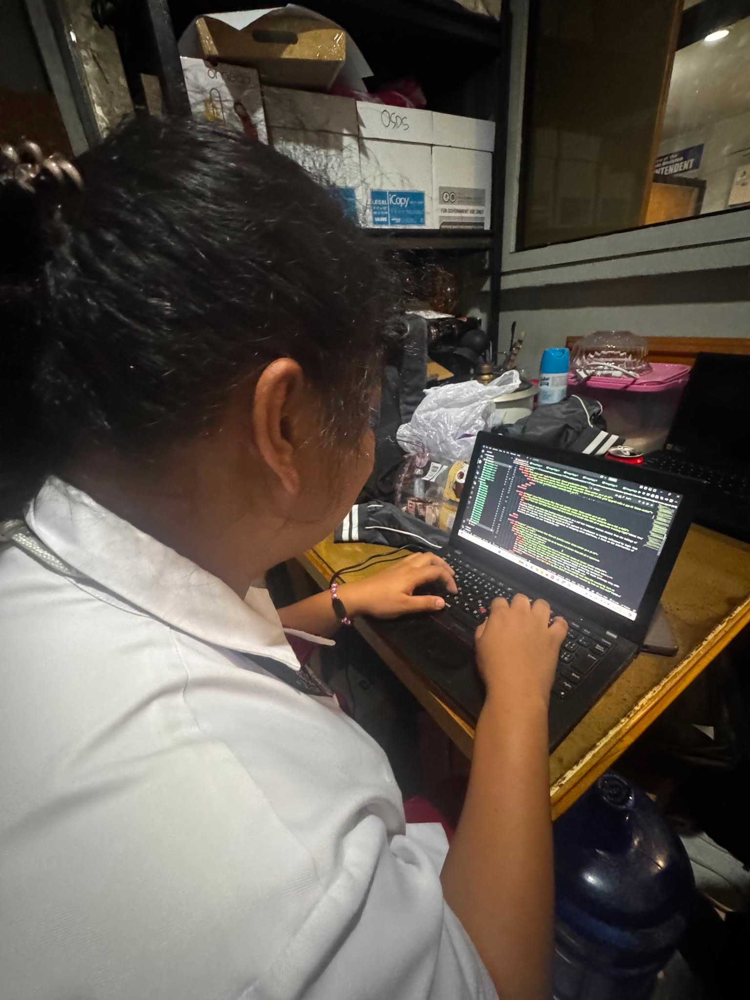
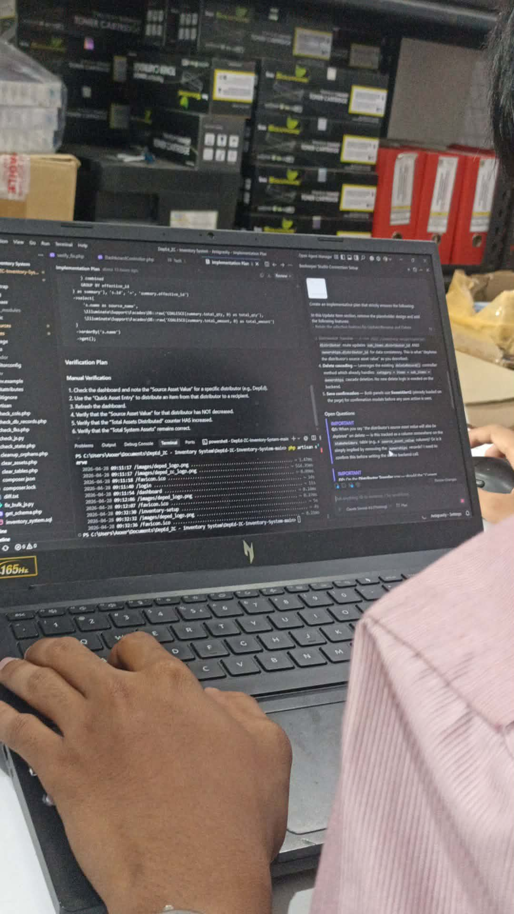
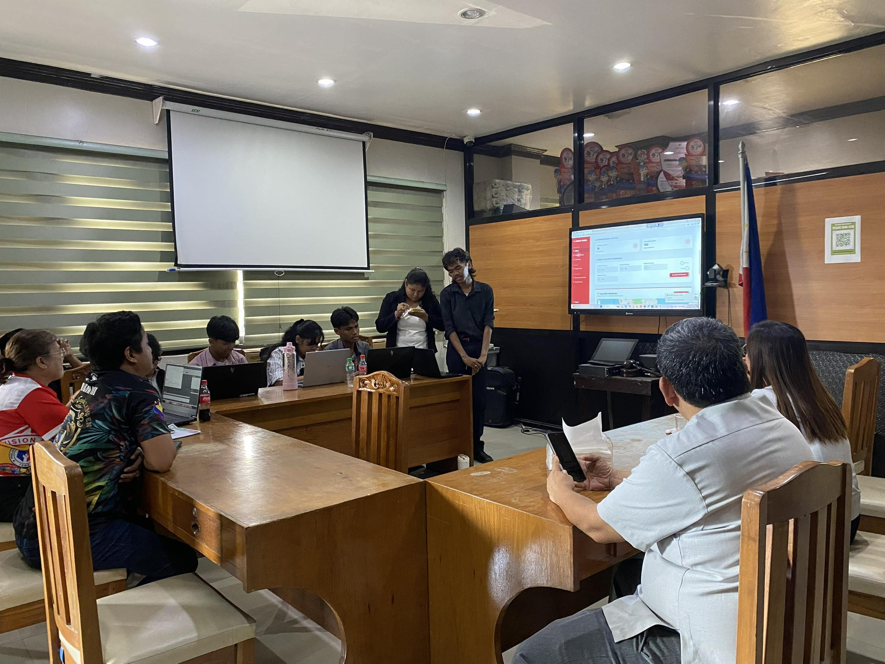
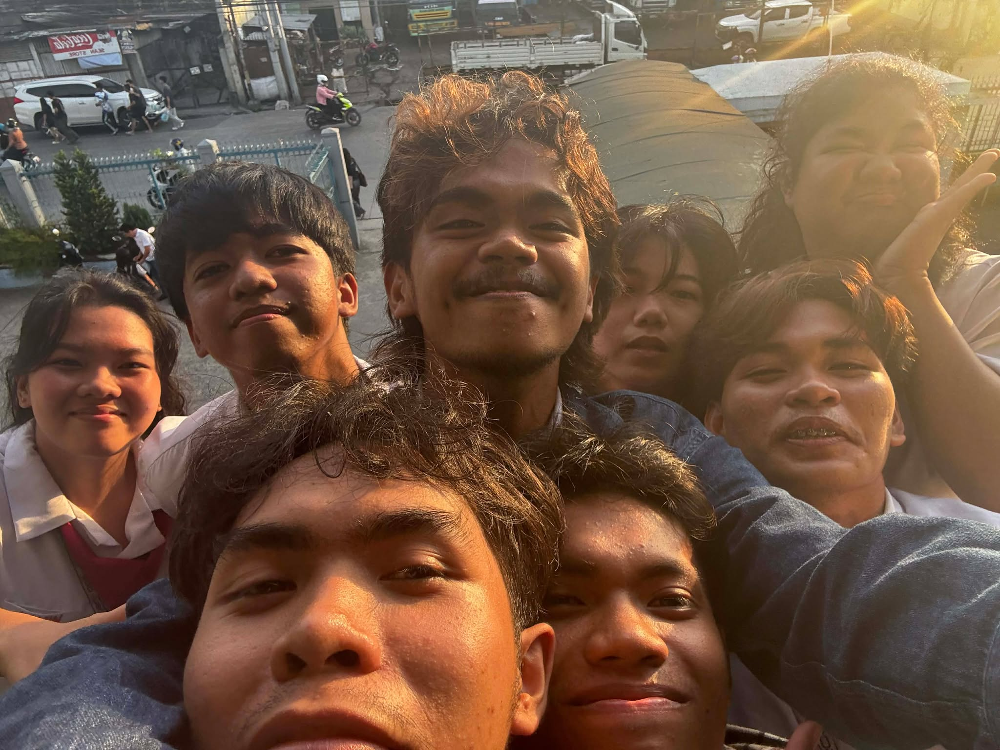
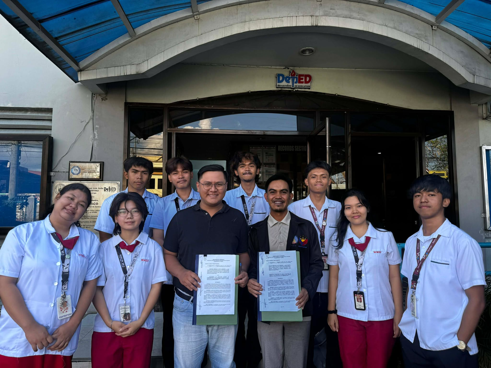
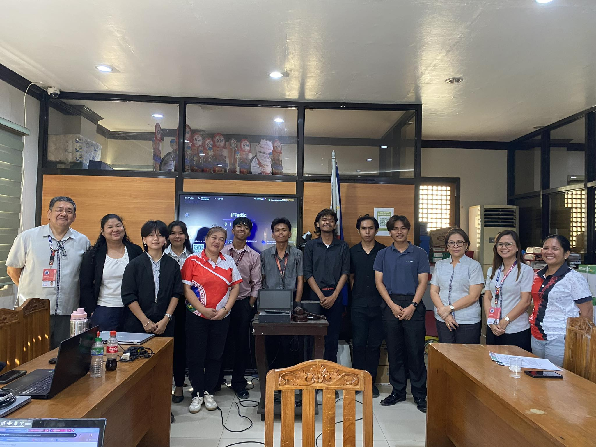
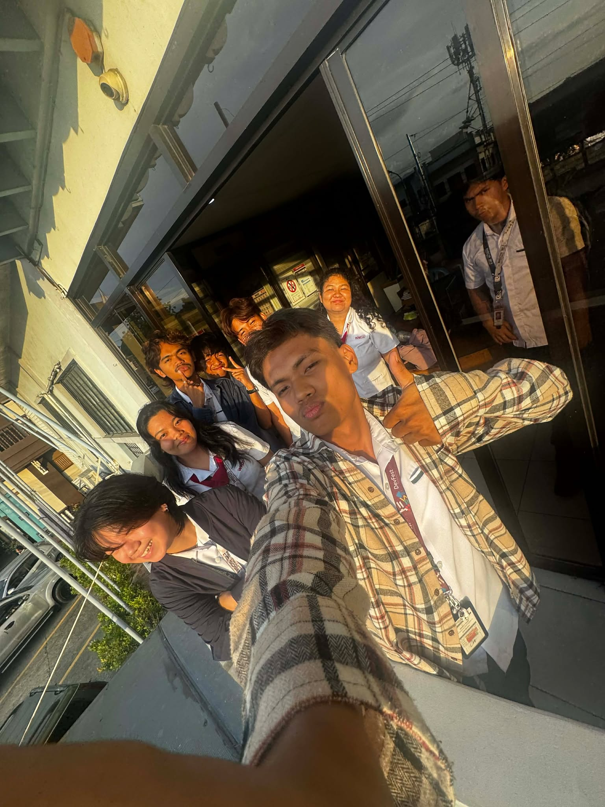
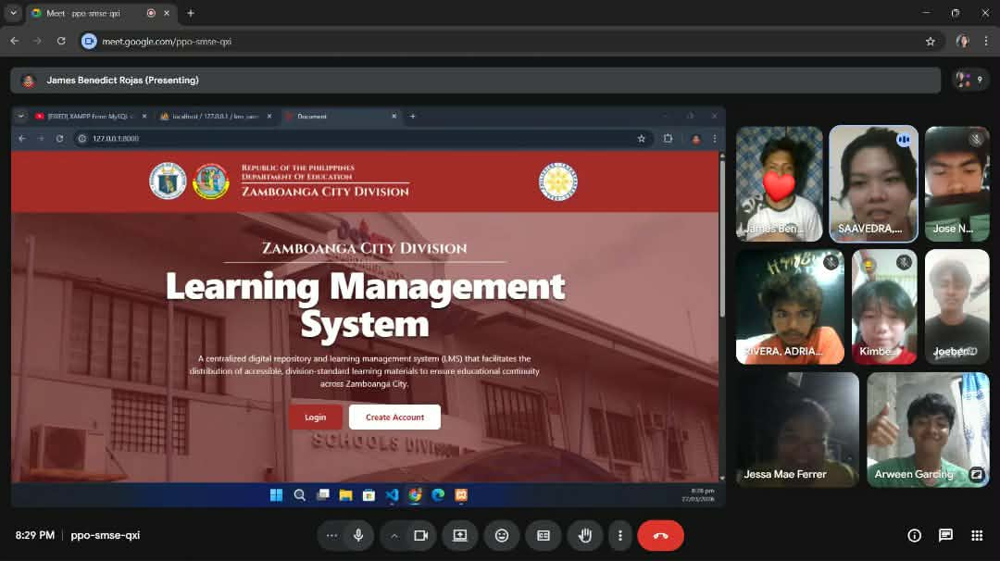

Welcome to
my Portfolio
Hi! I’m Jessa Mae Ferrer.
I’m a developer who loves finding smart ways to solve problems and creating tools that truly help people. I believe technology should be reliable, easy to use, and built with integrity. I'm ready to work and eager to help turn big ideas into practical solutions!
PHP / Laravel
MySQL
Kotlin / Android










